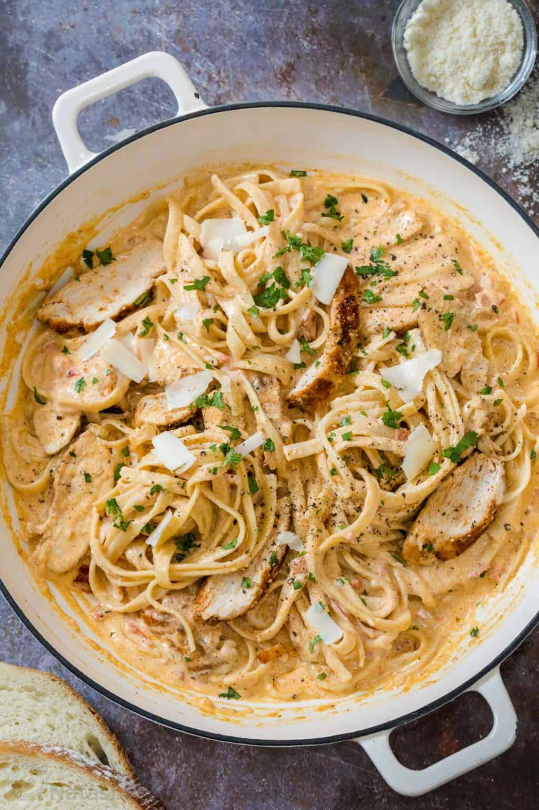

Creamy Cajun Chicken Pasta

Homemade Creamy Cajun Chicken Pasta is such a simple and quick recipe,
perfect for weeknight dinners. Juicy chicken breast tossed in tender pasta
in a creamy cajun garlic sauce.
All you need is a slice of Focaccia Bread to soak up the creamy sauce,
plus a simple Caesar Salad for a memorable pasta night.
We love recreating our favorite recipes and this copycat recipe for
Chili's Cajun Chicken Pasta recipe is going to become a family
favorite!
Creamy pasta with pieces of tender and juicy cajun flavored chicken in the
most delicious homemade cajun sauce. You will love all the flavors from
the dish and it comes together in under 30 minutes so it's perfect for
busy weeknights. I'm excited to add this to our long lineup of
30-minute meals.
Ingredients
-
Pasta ‑ For this recipe, we used linguine pasta
but you can use any type of pasta: angel hair, linguine, fettuccine,
elbow, macaroni, penne, bow tie pasta will all work great.
-
Chicken ‐ We used chicken breasts but chicken
thighs will work as well.
-
Cajun Seasoning ‐ You can use your favorite
store-bought cajun seasoning. You'll also need salt and pepper.
-
Garlic ‐ Freshly minced or finely chopped garlic
will give the best flavor, but you can substitute with 1 tsp dried
garlic, or add it to taste.
-
Butter ‐ for sauteing garlic and adds flavor to
the sauce.
-
Heavy Whipping Cream ‐ Makes the sauce rich and
creamy.
-
Parmesan ‐ Grated parmesan cheese or shredded
parmesan will work great.
Steps
-
Cook Pasta ‐ boil in a pot of salted water until
al dente, according to the package instructions.
-
Prepare Chicken ‐ Using a meat mallet or the
bottom of a saucepan, pound the chicken breasts into an even thickness
and season both sides with cajun seasoning. Saute the chicken in a
skillet with oil until fully cooked then slice into strips.
-
Make the Sauce ‐ In a deep skillet, saute the
garlic in butter 30-60 seconds or until fragrant. Add the diced tomatoes
and saute for about 2 minutes. Add the cream, remaining cajun seasoning,
and parmesan cheese and bring to a simmer..
-
Combine ‐ Add the pasta and sliced chicken to
the sauce and toss to combine.
-
Serve ‐ Top with parmesan and parsley to serve.